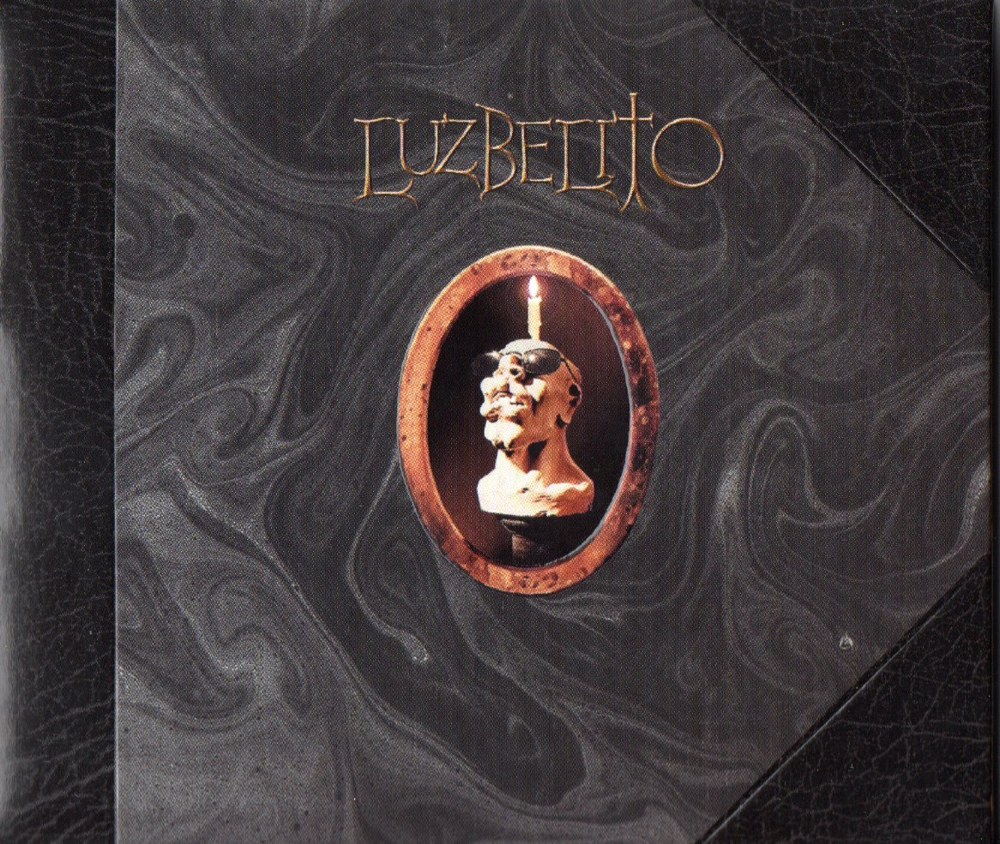
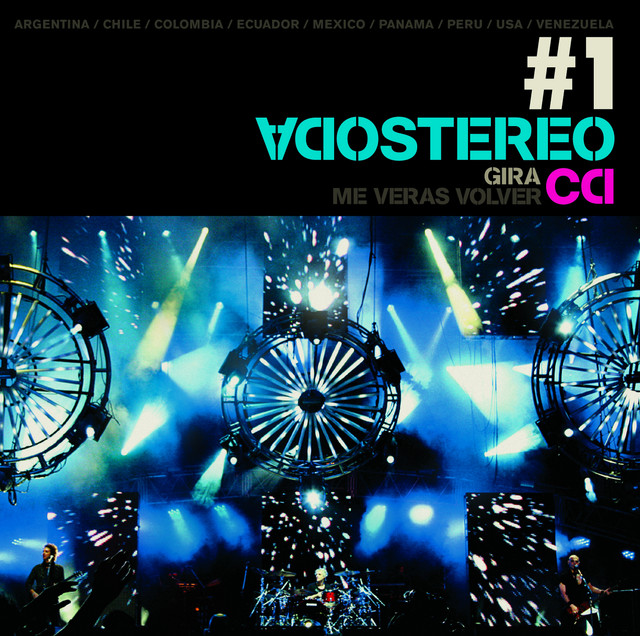
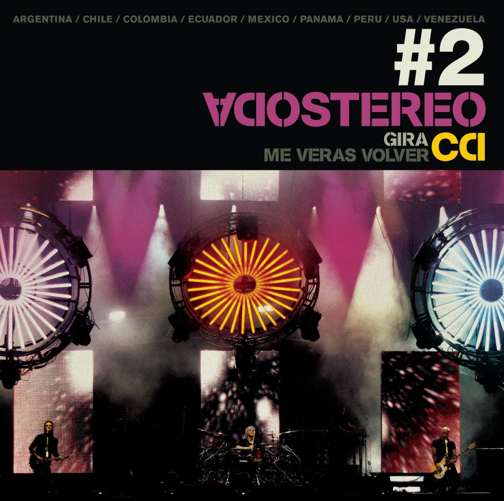

Luzbelito - Patricio Rey y sus Redonditos de Ricota

Luzbelito es el séptimo álbum de estudio de Patricio Rey y sus Redonditos de Ricota, publicado en julio 1996, y a su vez una de sus más polémicas obras. Es un disco conceptual que, a través de la idea de un ficticio hijo del Demonio llamado Luzbelito, juega con las ambigüedades de las creencias y comportamientos humanos desde distintos puntos de vista. La edición argentina de la revista Rolling Stone ubicó al disco en el puesto 88 entre los 100 mejores discos del rock nacional.
Más...
Gira Me Veras Volver - Sodastereo


Gira Me Verás Volver es el último álbum grabado en vivo por Soda Stereo, que reúne los mejores temas tocados por la banda en su gira de reencuentro Me Verás Volver por casi toda América durante el último trimestre de 2007.
La gira Me Verás Volver comenzó en Argentina el 19 de octubre y terminó el 21 de diciembre de 2007, también en Argentina, en el River Plate. Tiene la particularidad de tener un estilo más rockero que otras giras en todas sus canciones.
También, una edición de 2 DVD fue lanzada el 6 de octubre de 2008, incluyendo un DVD extras con canciones no incluidas en la edición de CD.
Más...